Наука · журнал «ДентАрт» 2018 №1
Анатомо-морфологічні, топографічні та біомеханічні особливості міжзубних контактних поверхонь постійних зубів. Частина IV
ANATOMIC-MORPHOLOGICAL, TOPOGRAPHICAL AND BIOMECHANICAL FEATURES OF THE INTERDENTAL CONTACT POINTS OF PERMANENT TEETH. PART IV
Олександр Постолакі,ДУМФ ім. Ніколає Тестеміцану (м. Кишинів, Республіка Молдова)
Типовою морфологічною зміною при першій стадії патологічного стирання зубів (ПЗС) є пошарове відкладення замінного дентину по периферії пульпи у відповідності з ушкодженою ділянкою, що поступово призводить до зменшення зубної порожнини. Звужуються частково або повністю дентинні канальці. Навколо них утворюється зона гіпермінералізації. У поверхневих ділянках їх структура часто ще збережена. Помітні шари звапніння. Солі кальцію розподіляються у дентині нерівномірно.
У цій ситуації ще є значні репаративні можливості, і активація дентиноутворення є компенсаторною реакцією організму, спрямованою на відновлення захисної функції твердих тканин зубів, і, безсумнівно, головна роль у цьому процесі відводиться одонтобластам, які забезпечують трофіку дентину та емалі.
У другій стадії ПСЗ прогресують деструктивні зміни в мінеральній речовині зуба і в патологічний процес втягується вся маса дентину, яка набуває неоднакової щільності. Більшість дентинних канальців облітеровані. У глибших шарах дентину оболонка, яка обмежує стінку канальців, може мати фестончастий, порізаний вигляд. У ряді випадків відзначалося, що канальці втрачають свої межі і зливаються. Томсові волокна можуть бути відсутні або бути у вигляді тонких тяжів.
Іноді спостерігаються ділянки перебудови дентину з утворенням структур у вигляді кістки, що неправильно формується, з деформацією або повною облітерацією кореневого каналу/ів (рис. 1). Замінний дентин має більшу мікротвердість, а отже менші можливості еластичної деформації. У відповідності з будівельно-механічними принципами, порожнисті, трубчасті конструкції не лише виграють у вазі й економії матеріалу, але і мають набагато більшу міцність, ніж суцільні балкові, що підтверджено численними спостереженнями в живій природі (порожнистоциліндричні кістки ссавців та птахів, стебла рослин і т. д.) і різними експериментами як найоптимальніше рішення, знайдене шляхом природного відбору. Ці біомеханічні закономірності можуть бути застосовані і щодо зубів як порожнистих конструкцій.
Відповідна компенсаторна реакція організму на функціональне перевантаження знаходить вияв у відкладенні вторинного цементу (гіперцементоз), що призводить до стискування періодонтальної щілини і судинно-нервового пучка біля верхівки кореня. Цьому ж сприяє перебудова кортикальної пластинки альвеол. Відтак порушується місцевий кровообіг, змінюється електрозбудливість пульпи, чутливість до термічних і хімічних подразнювачів.
Встановлено, що у пацієнтів з ПСЗ спостерігається більша мінеральна щільність кісткової тканини як щелеп, так і периферійних відділів скелета у порівнянні з особами з фізіологічною втратою емалі (р<0,05).
В.В. Самсонов і співавт. (2013) провели порівняння морфометричних показників нижньої щелепи на різних її рівнях у дорослих чоловіків другого зрілого віку за наявності природних зубів, часткової і повної їх втрати, що дозволило у «місцях слабкості» кісткової тканини виявити динаміку зміни форми і розмірів тіла та гілки нижньої щелепи.
М.Г. Бушан (1979) зазначає, що акт жування – це складний комплекс, який складається в основному із сили стискування, спрямованої вертикально, і сили тертя, спрямованої горизонтально, яка залежить від вираженості горбиків, ступеня атрофії альвеол та ін. Якщо у СНЩС переважають шарнірні рухи, що залежить від форм суглоба, то найчастіше розвивається вертикальна форма стертості, тоді як переважання ковзких рухів сприяє розвитку горизонтальної форми стертості.
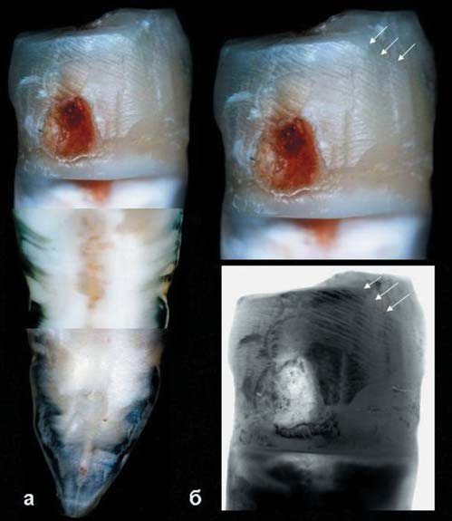
Рис. 1. Премоляр верхньої щелепи з ознаками патологічного стирання І ступеня за класифікацією М.Г. Бушана. Уражений глибоким карієсом проксимальний контактний майданчик з деформацією контурів збільшений у розмірах. Помітні побічні морфологічні прояви оклюзійної травми у вигляді численних паралельних ліній, що перетинають під кутом верхні 2/3 проксимальної стінки в результаті зміни напряму жувального навантаження та положення зуба в зубному ряду при підвищеній рухливості. «Сходинковий» шліф у зоні кореня зуба. Складена мікрофотографія О. Постолакі.
У залежності від форми ПСЗ у навколозубних тканинах визначаються характерні зміни. У тому випадку, якщо функціональне перевантаження спрямоване під кутом до поздовжньої осі зуба, зміни в тканинах пародонту значніші (періодонтальна щілина нерівномірно розширена через лакунарне розсмоктування кісткової тканини альвеоли, гребеня міжзубної перегородки, стоншення компактної пластинки на боці тиску), ніж при горизонтальній, де в основному відбувається прискорення перебудови кісткової тканини тільки навколо кореня зуба, можливо, у зв'язку з деяким «заглибленням» зуба в альвеолу. Вивчення діагностичних моделей одного з пацієнтів дозволило виявити, що руйнування міжзубних контактів у зоні першого моляра нижньої щелепи і надмірне горизонтальне навантаження на «робочому» боці (при односторонньому дефекті зубних рядів) призвело до зміщення зуба у мезіо-вестибулярному напрямку і порушення форми зубного ряду. Мезіальний рух зубів має ланцюговий характер, завдяки міжзубній групі волокон, що зберігають безперервність зубного ряду і беруть участь у розподілі жувального тиску в межах останнього.
З усією очевидністю можна стверджувати, що сплощення жувальної поверхні, зміна анатомічної форми коронок зубів і фізико-механічних властивостей твердих тканин, топографії і площі оклюзійних контактів, сили та напрямку функціонального навантаження, характеру жувальних рухів виявляться тим поєднанням факторів, яке приведе до наступної стадії руйнівного впливу, залучаючи до процесу крайові емалеві валики і проксимальні поверхні (рис. 2; 4 ж-м). При навантаженні рівнодіюча сила має нахилений напрямок – від оклюзійної поверхні зуба до шийки та від центру зуба назовні, що призводить до тріщин, сколів і руйнувань ослаблених і стоншених структур. Виходячи з власних спостережень, можемо припустити, що на клінічну ситуацію також будуть впливати і особливості морфології та топографії проксимальних міжзубних контактів. Чим більшою буде площа і щільність сполучення проксимальних поверхонь, тим вищий ступінь їх фізіологічного стирання (рис. 3). Відомий факт, що коли в результаті природних процесів фізіологічного стирання зуби переміщуються мезіально і зубна дуга скорочується до одного сантиметра, то при ПСЗ підвищується ризик того, що цей феномен набуде патологічної тенденції і може мати більш виражений вияв – у зв'язку з об'ємним зменшенням твердих тканин, у тому числі й по периметру коронок зубів, з руйнуванням проксимальних міжзубних контактів (рис. 2).
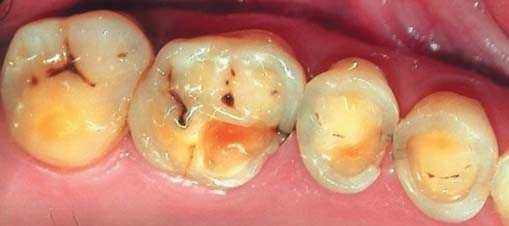
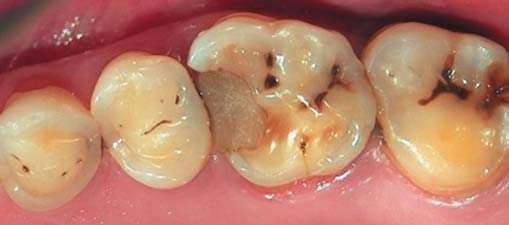
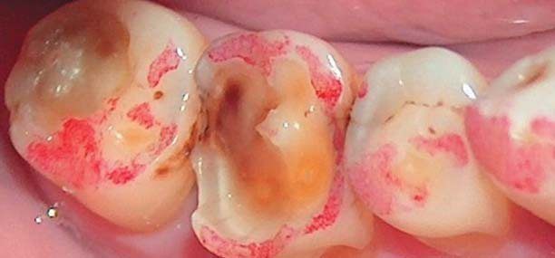
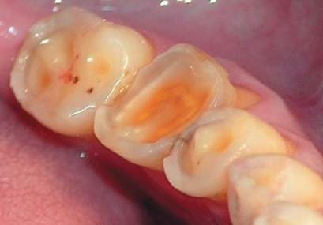
Рис. 2. Патологічна стертість зубів I-II ступенів, генералізована форма за Бушаном М.Г. (1979) у поєднанні з хронічним середнім карієсом кл. I-II за Блеком на бокових зубах. Прикус, що знижується. Порушення оклюзійних співвідношень з руйнуванням проксимальних поверхонь і міжзубних контактів. Фото О. Постолакі.
Вертикальні неповні тріщини характерні для всіх вікових груп. Тріщини емалі мають місце у більшій чи меншій кількості майже у всіх людей, старших 25 років, незалежно від статі, оскільки в процесі функціонування піддаються механічним навантаженням і впливу хімічних факторів.
І.К. Луцька, Н.В. Новак (2013) виділяють такі варіанти тріщин зубів залежно від глибини пошкодження твердих тканин: а) ті, що пошкоджують емаль і доходять до емалево-дентинної межі; б) ті, що проходять крізь емаль і дентин; в) ті, що досягають пульпи зуба; г) ті, що проходять через усі тверді тканини зуба (емаль, дентин і цемент).
На відміну від неповних, повні тріщини збільшуються в довжину і глибину під впливом повторюваного надмірного навантаження. Тріщини беруть початок у тих точках, де розвивається максимальна напруга, і ростуть у напрямку найменш міцних зон зубів. Такі тріщини можуть досягати зубних відкладень, викликати ураження пульпи (пульпіт, періодонтит) і призвести до інших ускладнень у вигляді дефектів коронки або перелому зуба (часткового чи повного). Зазвичай тріщини на поверхні коронки зуба можуть бути виявлені за допомогою вітального профарбовування та ультрафіолетового світла. Але це важко виконати при виникненні тріщин на проксимальній поверхні, особливо на контактних майданчиках. У проведеному дослідженні на видалених зубах візуально і на мікрофотографіях встановлено їх наявність на зазначених поверхнях зубів (рис. 4 в, е, ж, з, к, л). Опису такої локалізації тріщин і якої-небудь методики їх виявлення у спеціальній літературі ми не зустрічали.
С.Б. Іванова (1984) повідомляє, що за результатами клінічного обстеження пацієнтів, у 91,46 ± 1,15% зуби мали тріщини. Частота їх у чоловіків (93,14 ± 1,45) достовірно вища, ніж у жінок (82,52 ± 1,20%). З віком вона закономірно збільшується.
С.П. Ярова, І.І. Заболотна (2012) провели аналіз поширеності та особливостей локалізації тріщин емалі 102 постійних зубів обох щелеп у пацієнтів віком 25-54 років, досліджених за допомогою візуального огляду в бінокулярну лупу. Була встановлена висока поширеність тріщин переважно поздовжньої спрямованості (понад 90,20%) і з локалізацією у пришийковій зоні (94,57%). Дослідження 22 зразків методом скануючої електронної мікроскопії визначило, що тріщини І типу відповідають ширині відкриття до 3,0 мкм, ІІ типу – 3,0-10,0 мкм, ІІІ типу – понад 10,0 мкм. У 16,70% випадків діагностований до дослідження тип тріщин емалі зубів, залежно від складності виявлення, не відповідав отриманим результатами ширини їх розкриття. На думку авторів, треті моляри уражаються рідше, бо менше піддаються температурним та механічним впливам, а також мають менший термін функціонування. Більшість тріщин існує безсимптомно, проте під впливом зовнішніх (оклюзійне перевантаження, бруксизм) або внутрішніх факторів (порушення обміну речовин та хімічних елементів, водно-сольового обміну та ін.) вони можуть збільшуватися (рис. 4 ж-л).
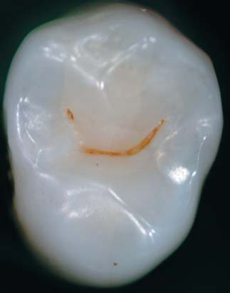
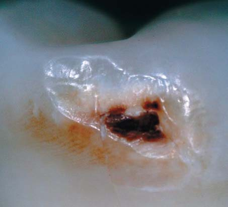
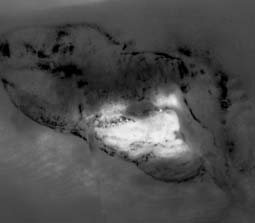
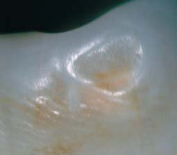
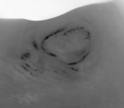
Рис. 3. Перший премоляр верхньої щелепи. Оклюзійна поверхня з фасетками стирання в межах емалі на горбиках і крайових емалевих валиках. Дистальна проксимальна поверхня уражена карієсом у зоні контактного майданчика неправильної форми зі збереженими додатковими майданчиками та мікроемалевими валиками по периметру. Медіальна проксимальна поверхня з контактним майданчиком меншого розміру та округлої форми зі збереженим мікроемалевим валиком по периметру. Мікрофото О. Постолакі, зб. Х 20-30.
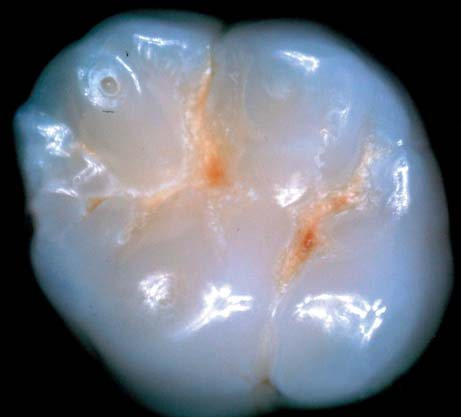
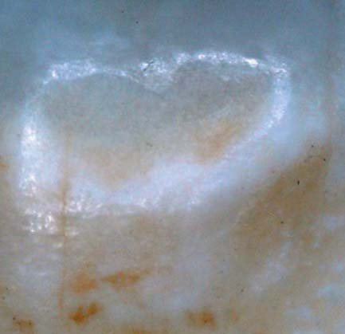
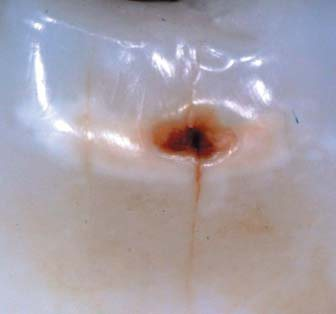
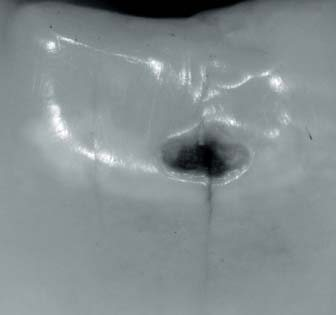
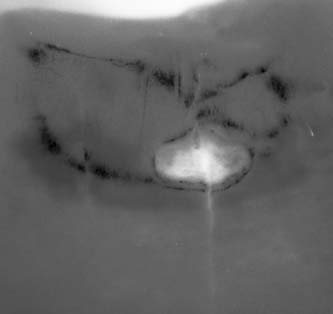
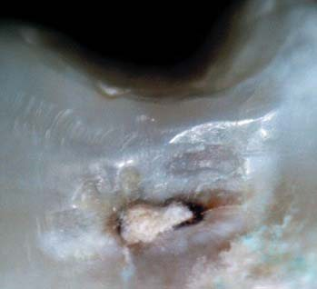
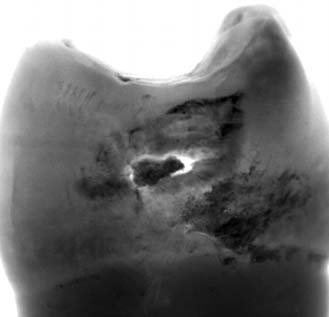
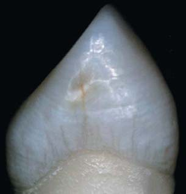
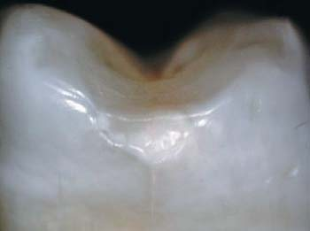
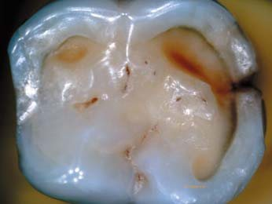
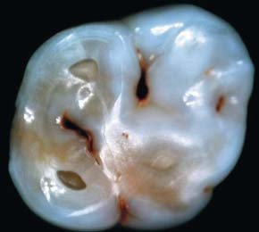
Рис. 4 (а-и). Цифрова мікроскопія оклюзійної та проксимальної поверхонь зубів з каріозним ураженням та/або патологічним стиранням (зб. Х 20). Вогнищева демінералізація у підповерхневому шарі емалі нерідко переходить у каріозний дефект і виявляється на контактних майданчиках, які можуть перетинати емалеві пластинки (ламелі) органічної природи. Розташовані у всій товщі емалі від кутикули до емалево-дентинної межі, вони мають особливе значення у фізіології і патології зуба. Крім того, сумація мікропошкоджень емалі та накопичення втоми в тканині як невідворотний результат циклічних повторних навантажень веде до порушення її цілісності. На окремих препаратах спостерігалося спонтанне запечатування фісур природним шляхом із утворенням високомінералізованої структури (а) та ознаки ремінералізації емалі на ділянках з підвищеним стиранням (і, о, п). Фото О. Постолакі.
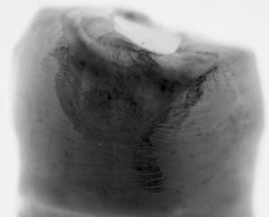
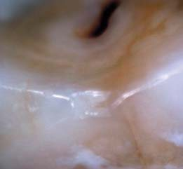
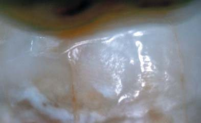
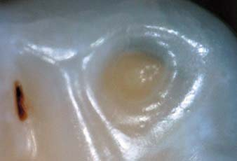
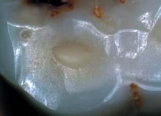
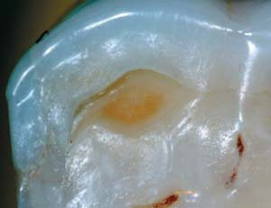
Рис. 4 (к-п, продовження). Тріщини емалі і дентину на проксимальних поверхнях зубів. Фото О. Постолакі.
Морфологічне дослідження стану пульпи, проведене на 15 видалених зубах з тріщинами емалі та дентину в осіб 45-64 років, засвідчило наявність поліморфних картин, які характеризуються реактивними властивостями, що супроводжуються порушеннями гемодинаміки циркуляторного характеру. Відомо, що за будь-яких пошкоджень твердих тканин зубів у пульпі активізуються захисно-пристосовні реакції, які супроводжують структурно-функціональну перебудову пульпи зуба. Регенеративні властивості пульпи проявляються виділенням рідини до ділянки утворення тріщин, що сприяє повноцінному відновленню анатомо-функціональної цілісності емалі. Але як і за патологічного стирання, у подібних ситуаціях паралельно діють два фактори: руйнування та відновлення. Від переваги того чи іншого процесу залежить перебіг хвороби (рис. 2; 4 н, о, п).
М.Г. Бушан (1967), зокрема, зазначає (цит. с. 24): «За найбільших компенсаторних змін, через різницю у твердих властивостях емалі і дентину, вони не здатні повністю затримати процес руйнування». У той же час, якщо розглядаємо міжзубні проксимальні поверхні як суглобові, то бачимо, що в них можуть мати місце аналогічні патологічні процеси, як і в справжніх суглобах. Так, за наявності тріщини у суглобі, незалежно від її геометричних розмірів, під дією тиску вона розклинюється синовіальною рідиною, що призводить до збільшення її розмірів.
Небезпека наявності цих дефектів полягає у тому, що в подальшому вони можуть служити шляхами проникнення мікроорганізмів зі слини, залишків їжі, протеолітичних ферментів, що руйнують тканину зуба, тим самим забезпечуючи доступ демінералізуючих кислот до мінеральних речовин підповерхневого шару. Це може стати причиною розвитку гіперестезії, каріозного процесу або клінічних дефектів.
Відомо, що розміщення та кількість оклюзійних контактів, вид стикування зубів, особливості анатомії СНЩС та напрямок докладеного зусилля під час жування і ковтання впливають на активність м'язів, які піднімають нижню щелепу. В.А. Хватова (2005) зазначає, що характер оклюзійних контактів впливає на рух нижньої щелепи. «Оклюзійна поверхня природних зубів – частина поверхні зуба від вершин горбиків до найглибшої ділянки центральної фісури. Вона характеризується анатомічними особливостями, генетично пристосованими для функції» [цит. 27, с. 35-37]. У той же час С.І. Криштаб (1975) звертає увагу на існування кількох шляхів нормального розвитку щелеп і допускає, що їх може бути більше двох, на відміну від Шварца (1941), який розглядав механізм розвитку фізіологічного прикусу на основі двох варіантів жувальних типів, залежно від переважного розвитку власне жувального чи скроневого м'яза, підкреслюючи роль інтенсивності та швидкості жування, що мають свої функціональні та морфологічні особливості: 1) масетеріальний тип; 2) темпоральний тип.
За масетеріального типу власне жувальний м'яз перетинає лінію молярів. В результаті значного подразнення з боку сильної жувальної мускулатури добре розвинуті нижня щелепа, альвеолярний відросток і пародонт зубів. Нижня щелепа росте за рахунок мезіального переміщення всього зубного ряду, і ріст переважно відбувається у цьому напрямку. При піднятті нижньої щелепи догори спостерігається тенденція до висування її вперед. Жувальні горбики значно стерті.
За темпорального типу власне жувальний м'яз прикріплюється на певному віддаленні від молярів. Через незначне подразнення з боку менш потужної жувальної мускулатури нижня щелепа, альвеолярний відросток і пародонт мають ніжнішу будову. Нижня щелепа переважно росте в дистальному напрямку. При піднятті нижньої щелепи вгору спостерігається дистальне зміщення щелепи. Жувальні горбики добре виражені.
За результатами проведеного дослідження С.І. Криштаб (1975) встановив 3 основні конституційні типи жування: 1) масетеріальний; 2) темпоральний; 3) урівноважений. «При урівноваженому типі жування має місце координований ріст і спостерігається симетричний розвиток нижньої щелепи в обох напрямках». Таким чином, оклюзійні взаємовідношення і проксимальні міжзубні контакти слід розглядати у ширшому аспекті з точки зору анатомії, функції та біомеханіки всіх елементів зубощелепно-лицьової системи.
При ПСЗ утворюється повний контакт оклюзійних поверхонь зубів і змінюється напрямок функціонального навантаження. Неосьові навантаження викликають у пародонті сили стискування, тромбоз, крововиливи, застій венозної крові, резорбцію кісткової тканини. У нормі точкові (не площинні) множинні, рівномірні контакти зі схилами горбиків зубів-антагоністів забезпечують опору, стабільність оклюзії та свободу для динамічної оклюзії (передня і бічна – права і ліва).
При русі нижньої щелепи в нормі контактні горбики зубів безперешкодно ковзають схилами і борозенками антагоністів. Латеральна екскурсія нижньої щелепи праворуч і ліворуч визначається анатомією СНЩС, співвідношенням іклів, конфігурацією оклюзійних кривих і морфологією оклюзійних поверхонь жувальних зубів. Під час змикання зубних рядів жувальний тиск розподіляється через міжзубні контакти і по осі зубів, навантаження на пародонт мінімальне, невеликі точкові контакти зменшують стирання жувальних площин.
М.Д. Гросс, Дж.Д. Метьюс (1986) у книзі «Нормалізація оклюзії» виділяють вісім «факторів оклюзії», які мають прямий вплив на характер контактів бічних зубів при рухах нижньої щелепи. Одночасно використовуючи й інші наукові роботи, спробуємо узагальнити їх, не ускладнюючи занадто термінологією, для більш доступного і швидкого розуміння суті питання. До «факторів оклюзії» належать:
- Суглобовий шлях – при висуванні нижньої щелепи вперед забезпечує розмикання щелеп у зоні молярів і залежить від кута згину суглобового горбика.
- Рух Беннета – траєкторія руху нижньої щелепи і суглобової головки з центральної оклюзії, наприклад у правий бічний (робочий, «опорний») бік, із синхронним зміщенням вниз, праворуч і вперед лівого виростка (неробочий, «балансуючий» бік), формуючи кут Беннета, рівний у середньому 15-17°. Величина кута залежить від морфології суглобової ямки на робочому боці, а також від викривлення та нахилу медіальної стінки суглобової ямки на неробочому боці.
- Оклюзійна площина – уявна горизонтальна площина між ріжучими краями передніх зубів та оклюзійною поверхнею жувальних.
- Крива Шпеє – увігнуте викривлення оклюзійної площини на рівні верхівок вестибулярних горбиків у бічній проекції.
- Крива Уїлсона – увігнуте викривлення оклюзійної площини у вестибулярно-язиковому напрямку, з обох боків щелеп, яке залежить від верхівок горбиків і нахилу зуба.
- Морфологія оклюзії – висота горбиків, глибина ямок, напрям крайових виступів та борозенок, а також кут нахилу схилів горбиків становлять елементи морфології оклюзійної поверхні, які впливають на характер контакту задніх зубів під час рухів нижньої щелепи.
- Різцевий шлях – при висуванні нижньої щелепи вперед і вбік становить передній напрямний компонент її рухів і контакт на робочому боці, забезпечуючи розмикання зубів на неробочому боці.
- Відстані між суглобовими головками і від кожного зуба до робочої суглобової головки, які впливають на траєкторію руху зубів при їх обертанні навколо вертикальної осі останньої.
Дж. Е. Карлсон (2009) звертає увагу на те, що під оклюзією часто розуміють максимальний фісурно-горбиковий контакт або змикання зубів-антагоністів. Однак фісурно-горбиковий контакт не визначає оклюзію, а є одним зі складових її елементів. Оклюзію пропонується розглядати як динамічну функціональну систему, а універсальний підхід до оклюзії – метод, до якого слід ставитися з великою обережністю. І перевагу надавати індивідуальному підходу.
Таким чином, зі сказаного вище випливає, що помилково розглядати окремо питання анатомії, морфології, біомеханіки і відновного лікування міжзубних проксимальних контактів та оклюзійних поверхонь зубів. На підставі складного взаємозв'язку і комплексної взаємодії обговорюваних елементів і структур зубощелепного апарату у багаторівневому обсязі цілісного і гармонійного функціонування усієї зубо-щелепно-лицьової системи та всього організму в подальшому дослідженні вважали необхідним звернути серйозну увагу на індивідуальні особливості будови оклюзійної поверхні з урахуванням анатомо-топографічного характеру міжзубних проксимальных контактів і провести їх систематизацію для практичного застосування в діагностиці, плануванні та реалізації у прямих і непрямих реставраціях.
Далі буде.
Література
- Автандилов Г.Г. Медицинская морфометрия. Руководство. – М.: Изд-во «Медицина», 1990, 384 с.
- Попов Г.И. Биомеханика. М.: Изд. Центр «Академия». 2007, 253 с.
- Симметрия природы и природа симметрии. (Философские и естественно-научные аспекты). М.: URSS, 2012. – 229 c.
- Рубинов И.С. Физиологические основы стоматологии. Изд-во «Медицина», Ленинградское отделение. – 1965, С. 5-7.
- Александер Р. Биомеханика. / Пер с англ. Ю.И. Лашкевича/. М.: Изд-во «Мир», 340 с.
- Дубнищев Ю.Н. Колебания и волны: Уч. пособие. 2-е изд., перераб. – СПб.: Изд-во «Лань», 2011, 384 с.
- Марков Б.П., Морозов К.А., Кабанов В.Ю., Королев С.Л. Способ оценки адаптационно-компенсаторных возможностей опорно-удерживающего аппарата зубов. Российский стоматологический журнал. 2004, № 6, С. 13-15.
- Постолаки И.И. Клиника и лечение глубокого прикуса у детей. (Клинико-экспериментальное исследование). Автореф. дис. ... канд. мед. наук. – Кишинев, 1967, 17 с.
- Рябов С.В. Клинико-антропометрическое обоснование оформления окклюзионной поверхности искусственных зубных рядов. Автореф. дис. ... канд. мед. наук. – Тверь. – 2005. – 20 с.
- Данилина Т.Ф. Биомеханическое состояние коронок жевательных зубов в норме, при кариесе, его осложнениях и обоснование методов лечения. Дис. ... канд. мед. наук. – М.: 1997. – 123 с.
- Окушко В.Р. Основы физиологии зуба: Учебник для врачей-стоматологов и студентов медицинских университетов. – Тирасполь: Изд-во Приднестр. ун-та. – 2005. – 240 с.
- Мандра Ю.В. Повышенная стираемость зубов: ранние клинические проявления, морфоструктурные изменения, лечебно-профилактические методы коррекции. Автореф. дис. ... д-ра мед. наук. – Екатеринбург, 2011. – 38 с.
- Гемонов В.В., Лаврова Э.Н., Фалин Л.И. Развитие и строение органов ротовой полости и зубов. Изд-во ГОУ ВУНМЦ МЗ РФ. – 2002. – 256 с.
- Лидман Г.Ю., Ларионов П.М., Савченко С.В. Комплексная морфологическая оценка твердых тканей зуба при кариозном поражении. СМЖ. 2009, №3-1, С. 67-72.
- Гордон Дж. Э. Конструкции, или почему не ломаются вещи / Пер. с англ. В.Д. Эфроса под ред. С.Т. Милейко/. Изд-во «Мир», М., 1980.
- Фалин Л.И. Гистология и эмбриология полости рта и зубов. Гос. Изд-во Мед. Лит-ры. М.: – 1963. – 219 с.
- Бушан М.Г. Кариес зубов. Лечение и профилактика. Кишинев, 1979. – 283 с.
- Луцкая И.К. Гистология зуба. Современная стоматология. 2006, №4, С. 37-43.
- Бушан М.Г. Патологическая стираемость зубов и ее осложнения. Кишинев, 1979, 183 с.
- Каламкаров Х.А. Ортопедическое лечение патологической стираемости твердых тканей зубов. – М.: Мед. информ. агентство, 2004. – 176 с.
- Фастовец Е. А. Структурно-функциональное состояние костной ткани скелета у больных с патологической стираемостью твердых тканей зубов / Е. А. Фастовец, С. С. Кобыляк // Современная стоматология. 2016, № 2, № 1. – С. 71-73.
- Самсонов В.В., Иорданишвили А.К., Рыжак Г.А. Возрастные изменения морфометрических характеристик тела нижней челюсти и их изменения при частичной и полной утрате зубов. Т. 14, Ст. 14 (С. 162-171). http://www.medline.ru/public/art/tom14/art14.html. – 2013.
- Ярова С.П., Заболотная И.И. Многоуровневое изучение распространенности трещин эмали зубов // Український стоматологічний альманах. 2012. №6.
- Луцкая И.К., Новак Н.В. Трещины постоянных зубов: учеб.-метод. пособие. М-во здравоохранения Респ. Беларусь, Бел. мед. акад. последиплом. образования. – Минск: БелМАПО, 2013. – 36 с.
- Иванова С.Б. Трещины эмали и дентина: (Клинико-эксперим. исслед.). Автореф. дис. ... канд. мед. наук. – Калинин, 1984. – 24 с.
- Ралло В.Н., Валюшко Н.В. Характеристика пульпы у лиц 45-46 лет с трещинами твердых тканей зубов. БГМУ: 90 лет в авангарде медицинской науки и практики: сб. науч. тр. – Минск, 2013. – Вып. III. – С. 148-150.
- Хватова В.А. Клиническая гнатология. М. Изд-во «Медицина». – 2005.
- Криштаб С.И. Аномалии нижней челюсти. Изд-во «Здоров'я». Киев. – 1975. – 167 с.
- Смуклер Х. Нормализация окклюзии при наличии интактных и восстановленных зубов. / Пер. А. Островского, Е. Ханина/. Изд. Дом «Азбука». М., С.-Пб., Киев, Алматы, Вильнюс. – 2006. – 136 с.
- Дж. Е. Карлсон. Физиологическая окклюзия. / Пер. Е. Ершова/ Испр. и допол. изд. Изд-во: Midwest Press. – 2009 – 218 с.
- Гросс М.Д., Мэтьюс Дж.Д. Нормализация окклюзии. М.: Изд-во «Медицина». – 1986. – С. 50-52.